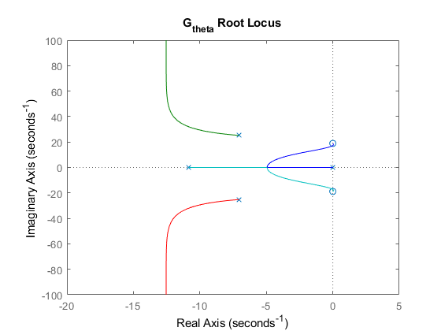
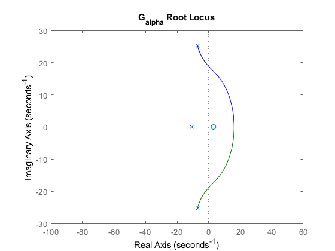

Computational Intelligence Project - System Stability
Amirkabir University of Tehran Team Members:Mohammad Arabzadeh, Mahban Gholijafari, Niloofar Tavahodi, Arshia Samoudi,
Contents
Clear The Workspace
clear variables; close all; clc;
Transfer Functions
b_theta = [123300, 0, 43983576]; a_theta = [2500, 62350, 2092275, 18544029, 0]; G_theta = tf(b_theta, a_theta); b_alpha = [-123300, 379764]; a_alpha = [2500, 62350, 2092275, 18544029]; G_alpha = tf(b_alpha, a_alpha);
G_theta Routh Hurwitz
The open-loop Routh Hurwitz is stable.
routh(a_theta);
Routh Table : / 2500, 2092275, 0 \ | | | 62350, 18544029, 0 | | | | 1681865475 | | ----------, 0, 0 | | 1247 | | | | 18544029, 0, 0 | | | \ 18544029, 0, 0 / No sign changes and hence system is stable
G_theta Root Locus
It is only unstable with the few gain values on the right side of the graph.
figure
rlocus(G_theta)
title('G_{theta} Root Locus')
 G_alpha Routh Hurwitz
The open-loop Routh Hurwitz is stable.
routh(a_alpha);
Routh Table : / 2500, 2092275 \ | | | 62350, 18544029 | | | | 1681865475 | | ----------, 0 | | 1247 | | | \ 18544029, 0 / No sign changes and hence system is stable
G_alpha Root Locus
Stability of G_alpha is more strict than G_theta and there are less regions of stability for it.
figure
rlocus(G_alpha)
title('G_{alpha} Root Locus')
